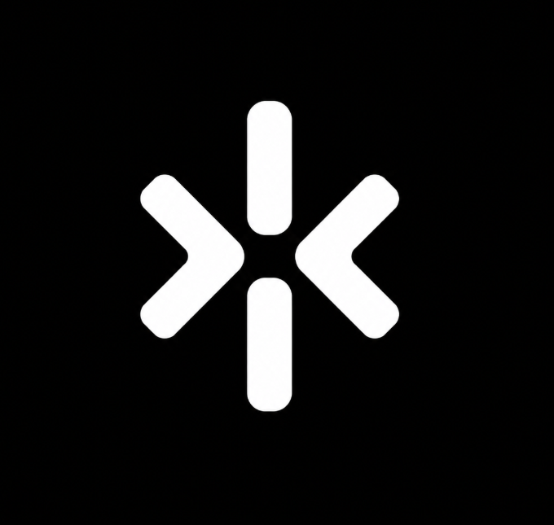
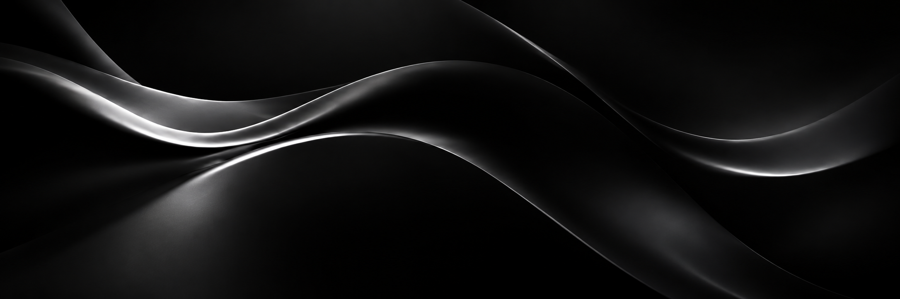

Web design
Interfaces que transformam identidade em experiência.

VYRAESTÚDIO DIGITAL INDEPENDENTE BRASIL · 2026
Estratégia, design e tecnologia para marcas que querem avançar.
Antes da reunião, da proposta ou do primeiro “oi”, a experiência da sua marca já começou.
Conheça nossa abordagem ↗02 / COMO PODEMOS AJUDAR
Do primeiro rascunho ao último pixel.
Cada escolha tem um motivo.
Interfaces que transformam identidade em experiência.
Desenvolvimento rápido, responsivo e sob medida.
Páginas projetadas para transformar atenção em ação.
Estratégia, design e tecnologia trabalhando juntos.
O QUE A MARCA PROMETE. O QUE A TELA ENTREGA.
03 / PROJETOS CONCEITUAIS
Três ideias, três identidades,
um próximo passo para cada marca.
Projetos demonstrativos. A VYRA não representa as marcas citadas.
RESPONSIVO
POR NATUREZA
EXPERIÊNCIA
DIGITAL ÚNICA
POSSIBILIDADES
EM CADA IDEIA
05 / NOSSO PROCESSO
Um caminho claro, construído
em parceria com você.
Entendemos o negócio, o público e o que precisa mudar.
Transformamos estratégia em estrutura e direção.
Criamos a experiência visual com intenção em cada detalhe.
Desenvolvemos, refinamos e colocamos o projeto no ar.
06 / SOBRE A VYRA
A VYRA cruza direção de arte, estratégia e código para criar sites com personalidade e propósito.
Não partimos de uma fórmula. Primeiro entendemos o que torna cada marca impossível de confundir.

07 / O PRÓXIMO PASSO
Tem uma ideia, negócio ou projeto em mente?
Começar um projeto ↗